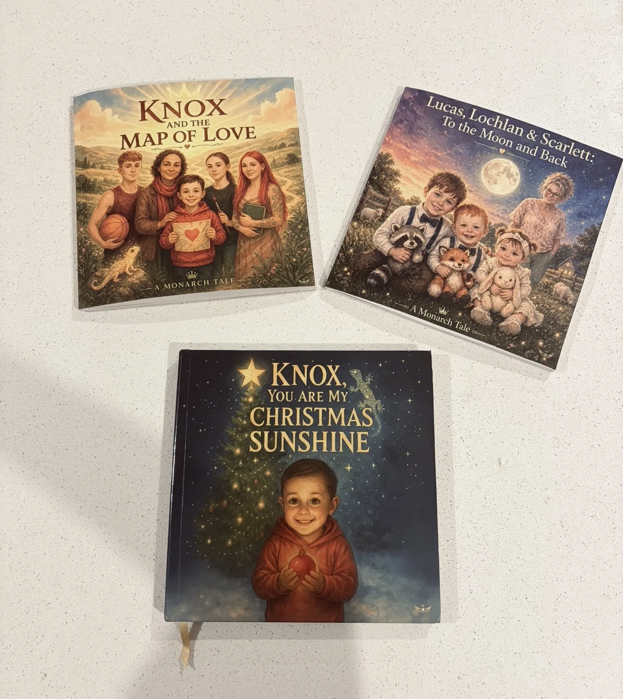
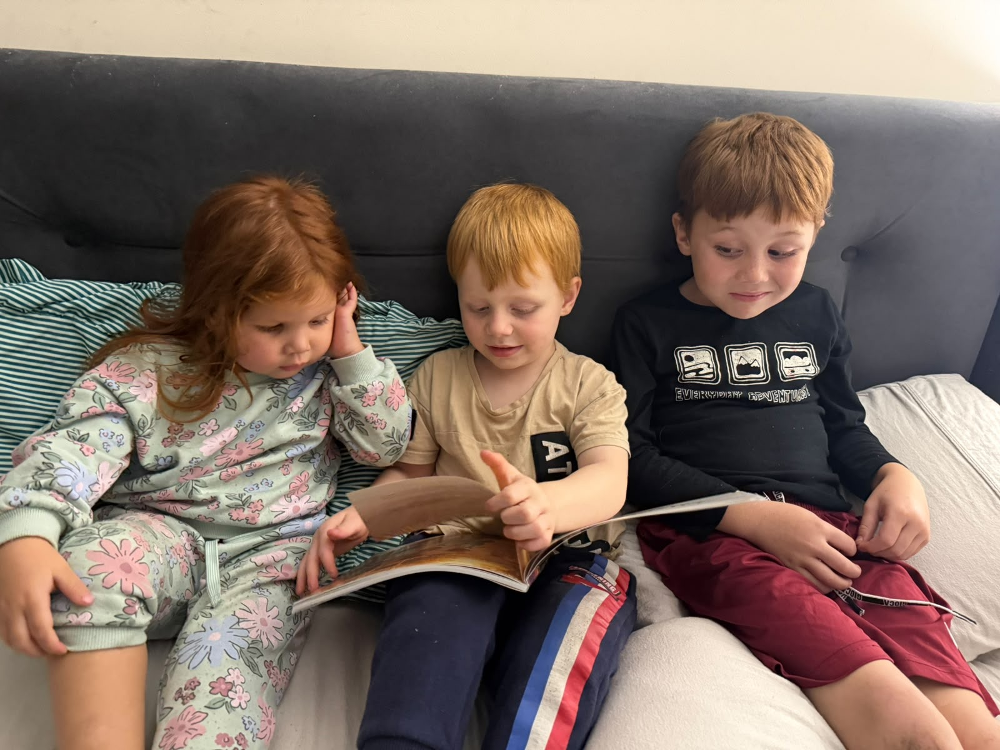

Share your family
Tell us about the children, people, routines and memories at the heart of your story.
Monarch Tales transforms your child's personality, memories, relationships and family traditions into a commissioned family keepsake created only for your family.

Photographs capture what life looked like. Stories preserve what it felt like.
Childhood rarely announces the moments that will matter most. A familiar phrase. A bedtime routine. The way siblings make each other laugh. The person a child reaches for when they need comfort.
Monarch Tales gathers those details and turns them into something a family can hold: a beautifully made story in which children feel genuinely known.
The outcome is simple: “My child was truly seen.”
The strongest proof of Monarch Tales is the finished keepsake and the child who recognises himself inside it.




Every stage has a clear purpose, so you always understand what happens next.
Tell us about the children, people, routines and memories at the heart of your story.
We shape the emotional direction, age-appropriate voice and structure before full production.
Storybook interpretations are developed from your references and approved before scenes begin.
Your story, illustrations and layout are carefully brought together as one coherent keepsake.
You receive defined review rounds, with feedback gathered clearly before final approval.
After final approval and balance, the book is prepared, printed and delivered to your family.

Prince Francix founded Monarch Tales with a simple realisation: photographs preserve what childhood looked like, but stories preserve what childhood felt like.
From Lagos, Nigeria, Prince leads this Australian-registered family-memory company with one purpose—to preserve the little phrases, traditions, routines and everyday moments time quietly takes away.
Read Our StoryA future film about why Monarch Tales exists.
Twenty families will help Monarch Tales refine the experience that will eventually serve thousands more.
Applications are accepted continuously. Production takes place in carefully managed batches, with one or two families active at a time initially.
Final customer price including standard shipping within Australia. Delivery availability is confirmed after application.
Only the Founding Families Legacy Edition is available today. Seed and Becoming will launch after the founding collection.
A thoughtful digital story experience designed for families who want a beautiful, accessible beginning.
Launching After the Founding Families CollectionA shorter printed keepsake designed to preserve a meaningful season of childhood.
Launching After the Founding Families CollectionThe most complete commissioned Monarch Tales experience, currently available through the Founding Families Collection.
Explore the Founding Edition →“A beautiful personalised book that makes children feel special and encourages a love of reading.”Maddison, Australia · Real family review
The Founding Families process is designed to feel personal without ever feeling uncertain.
You apply for a Founding Family place. We review your application, confirm suitability, capacity and supported delivery, then invite accepted families into private onboarding. Payment is not taken during the public application.
Yes. Names are only a small part of the work. The story is shaped around personality, relationships, traditions, real memories and the emotional message your family wants to preserve.
Characters are carefully created storybook interpretations inspired by your photographs. They are not photographic portraits. You approve the initial character direction before full scene production.
Yes. Monarch Tales can centre siblings or twins together and preserve the individual personality and role each child brings to the family.
The Founding Families Legacy Edition includes one consolidated story-review round and two consolidated illustration-correction rounds. Complete redesigns after character approval are not included.
Delivery is available to supported regions in Australia, the United States, Canada and the United Kingdom. Availability and standard delivery are confirmed before private onboarding.
Apply for one of twenty Founding Family places. There is no payment during the application stage.